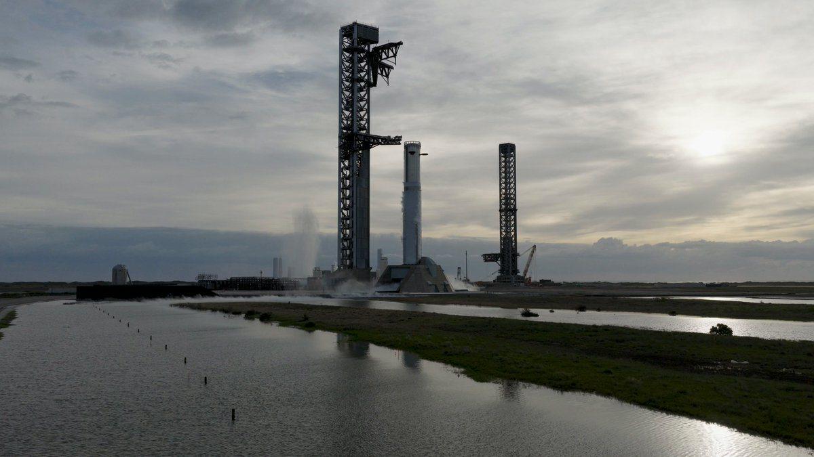
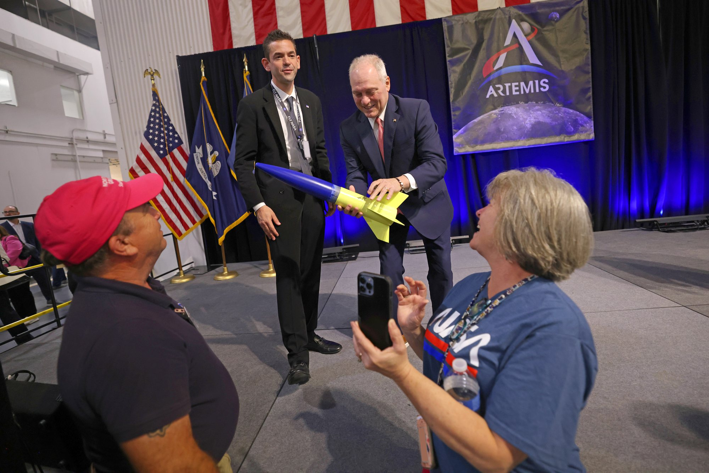

In otto giorni, dal 22 al 30 ottobre, SpaceX ha chiuso tutte le prove dei motori per Flight 15, ha portato Ship 43 alle prove a freddo e alle prove di presa con la torre e ha spostato fra fabbrica, banchi di prova e rampa dieci fra Ship e booster. Alla fine della settimana è arrivata anche la nuova data: il 12 novembre, prima data possibile per il volo in cui SpaceX tenterà per la prima volta di riprendere con la torre sia il Super Heavy sia la Ship.
Booster 22 e Ship 42 hanno finito le prove
La settimana si è aperta con il booster. Booster 22 è stato portato al Pad 2 e montato sulla tavola di lancio nelle prime ore di sabato 24 ottobre. Domenica 25, all’alba in Texas, ha acceso tutti i 33 Raptor per circa 15 secondi, la durata piena prevista per lo static fire del Super Heavy. SpaceX lo ha confermato su X la sera stessa: «Full duration 33-engine static fire for the Super Heavy booster preparing for Flight 15». Il booster è rientrato nella Mega Bay 1 il 26 ottobre per le ultime preparazioni.
Poi è toccato alla Ship. Nella notte fra il 25 e il 26 ottobre, durante una sola chiusura delle strade, sono stati fatti tre spostamenti in circa sette ore: Ship 43 è tornata da Massey’s, Ship 42 è andata a Massey’s e Booster 22 è rientrato dal sito di lancio. Il 26 ottobre Ship 42 ha acceso un solo Raptor alimentato dai serbatoi interni più piccoli, quelli che servono in orbita, per simulare la manovra di rientro. Il 27 ottobre ha completato l’accensione di 60 secondi con tutti e sei i motori. «Ship 42 static fires complete», ha scritto SpaceX il 28 ottobre. Ne avevamo parlato nella breaking del 28 ottobre; la novità è che ora la Ship è tornata in fabbrica, nella Mega Bay 2, dove riceverà le ultime ispezioni, le cariche del sistema di autodistruzione di sicurezza e i satelliti Starlink che porterà in orbita.

Perché la data dipende dalle carte
Il 29 ottobre il calendario aggiornato dalle autorità della contea di Cameron, quello che indica le chiusure previste per le attività di Starbase, ha spostato la prima data possibile per Flight 15 dall’8 al 12 novembre. Non è l’unico segnale da leggere con prudenza: anche il 12 può cambiare. I veicoli, a questo punto, sono pronti o quasi. A decidere sarà soprattutto la parte burocratica.
Flight 15 non è un volo come gli altri. Per la prima volta la Ship, dopo l’orbita, dovrà rientrare non nell’oceano ma verso Starbase, sorvolando terra, e farsi prendere dalle braccia della torre. Nella teleconferenza sui conti del 20 ottobre Gwynne Shotwell ha detto che SpaceX, dopo un confronto «significativo e costruttivo» con la FAA, si aspetta una licenza che comprenda il ritorno al sito di lancio e la presa con la torre di entrambi gli stadi. Elon Musk, nella stessa occasione, ha giudicato il successo al primo tentativo «more likely than not», più probabile del contrario. Prima del via libera, però, vanno chiuse le analisi di sicurezza su una traiettoria di rientro che passa sopra zone abitate, ed è questo il lavoro che oggi tiene il calendario.
Ship 43 prova la presa
Mentre Flight 15 aspetta, Flight 16 accelera. Ship 43 era arrivata a Massey’s il 22 ottobre e il giorno dopo ha completato entrambe le prove a freddo con azoto liquido, quelle che verificano la tenuta dei serbatoi. Rientrata in fabbrica il 26 per essere spostata su un carrello da trasporto, è stata portata subito al Pad 2 per una serie di prove di presa.
Prima la torre l’ha sollevata all’altezza della presa e poi abbassata, per avvicinare il braccio dei collegamenti di carico, quello che a terra porta propellente ed elettricità alla Ship. Agganciarlo a una Ship appena presa serve a mettere in sicurezza il veicolo dopo il volo, e i controllori si stanno esercitando con veicoli che non hanno mai volato. Nella seconda prova la Ship è stata spostata al centro delle braccia, sollevata senza gli appoggi di stabilizzazione e poi spinta dai pistoni lungo le rotaie fino a combaciare con gli stabilizzatori. È la stessa manovra usata per allineare i booster 12, 14 e 15 dopo le loro prese. Ship 42 aveva fatto lo stesso percorso a metà settembre.
Il 27 ottobre Ship 43 è tornata nella Mega Bay 2, dove riceverà i motori prima del suo static fire, atteso a dicembre. Booster 23, l’altro veicolo di Flight 16, è passato invece da Massey’s fra il 27 e il 30 ottobre senza prove visibili, ed è rientrato nella Mega Bay 1. Flight 16 potrebbe essere il primo lancio di Starship dal complesso 39A in Florida, entro la fine dell’anno.
Una fabbrica piena e i cantieri del futuro
La Mega Bay 2 oggi è piena. Ci sono Ship 40, che ha volato su Flight 13 ed è sotto ispezione; Ship 42, pronta per Flight 15; Ship 43 in attesa dei motori; Ship 44, appena completata nell’assemblaggio il 20 ottobre; e Ship 45, per ora solo ogiva, vano di carico e cupola anteriore. Nella Mega Bay 1, nella serata del 30 ottobre, è stato sollevato il serbatoio del metano di Booster 24. Se Ship 42 e Ship 43 saranno riprese con successo, SpaceX dovrà trovare spazio anche per veicoli recuperati, e potrebbe servire la nuova Gigabay.
Intanto crescono le infrastrutture. Al Pad 1, la vecchia rampa in ricostruzione, è stata gettata in calcestruzzo una delle rampe del canale di scarico delle fiamme, sono stati posati supporti e pareti prefabbricate e montate le quattro gambe della tavola di lancio. La nuova tavola, assemblata a parte nel sito di Sanchez, ha già i primi due livelli e le piastre del sistema ad acqua sul piano superiore; le braccia della torre del Pad 1, invece, sono ancora lontane dall’essere usabili. A Massey’s sono arrivati tre serbatoi di azoto liquido più grandi, nuovi impianti di vaporizzazione e il cantiere di un secondo banco per le prove di schiacciamento dei serbatoi. SpaceX ha anche ottenuto l’area di Massey’s 2, a est del sito attuale, che ne più che raddoppia la superficie e potrebbe ospitare altri due banchi per gli static fire delle Ship.

Isaacman: Starship arriva per terza in Artemis III
Nella notte è uscita anche un’intervista dell’amministratore NASA Jared Isaacman a NASASpaceflight, che aggiunge un tassello al piano presentato il 23 ottobre. Artemis III, ricordiamo, resterà in orbita terrestre bassa: tre lanci di tre aziende diverse, con Orion che si aggancia prima a un Blue Moon di prova di Blue Origin e poi a una Starship. Isaacman ha chiarito qual è la condizione per partire: lo SLS non decolla finché il lander di Blue Origin non è già in orbita.
«We’re not going to launch without Blue Origin in it», non partiremo senza Blue Origin, ha detto. «That’s why they’re going to launch first», per questo partono per primi: devono essere lassù, fare qualche verifica, e solo allora la NASA dà il via allo SLS. Blue Moon può aspettare in orbita circa 30 giorni. Una volta partito lo SLS la missione è impegnata, e Starship arriva dopo: «Blue has got to go in order to trigger SLS, and then from there we’ll take getting Starship», cioè prima deve andare Blue per far scattare lo SLS, poi si aggiunge Starship.
Per Starship il compito è chiaro: immagini ad alta definizione, prove di controllabilità e un esercizio di avvicinamento e aggancio, nelle circa due settimane della missione che comprendono i due incontri in orbita. Isaacman ha definito «just so cool» l’idea di avere i tre veicoli vicini nello spazio, ma ha detto che le lezioni più importanti arriveranno dal lato Blue Origin, un’azienda che finora non ha mai tenuto in vita persone nello spazio oltre i voli suborbitali di New Shepard.
Sui tempi, Isaacman ha indicato il lander come il collo di bottiglia principale: «We don’t have a fully assembled Blue test article yet», non c’è ancora un esemplare di prova di Blue Moon completamente assemblato. Ha però respinto l’idea che il ritardo sia colpa solo dei costruttori dei lander: «The landers could be ready right now and we would still, and NASA would still insist on an Apollo 9 mission in low Earth orbit». Anche con i lander pronti oggi, insomma, la NASA vorrebbe comunque una prova in orbita bassa come quella di Apollo 9, con sgancio, spostamento e nuovo aggancio, prima di tentare la Luna. Ha raccontato anche quanto l’agenzia stia aiutando i fornitori, con personale sul campo, pezzi costruiti in proprio e perfino aerei militari C-17 per portare grandi cupole dei serbatoi dalla costa ovest alla Florida per Blue Origin.
C’è poi una visione più ampia, che riguarda direttamente il modello di SpaceX. Per Isaacman la campagna a più lanci di Artemis III è «a signal of where we’re going», un segnale della direzione: tutto quello che si costruirà da qui in avanti, ha detto, richiederà campagne di molti lanci, anche per assemblare in orbita le future astronavi a propulsione nucleare. È esattamente lo scenario per cui Starship è pensata, con rifornimenti in orbita e cadenze di lancio molto alte.
Cosa seguire adesso
Nei prossimi giorni contano tre cose: la pubblicazione della licenza FAA per Flight 15, con l’eventuale autorizzazione al ritorno della Ship a Starbase; la conferma o un nuovo spostamento della data del 12 novembre; e il caricamento degli Starlink su Ship 42, ultimo passaggio prima di portarla in rampa. Per Flight 16 il prossimo traguardo è lo static fire di Ship 43, a dicembre.
Il dossier sul regalo di oltre 2 milioni di azioni SpaceX di Gwynne Shotwell ai Trump Accounts dei ragazzi passa all’archivio Notizie.
Fonti pubbliche e tracce
Ultimo aggiornamento editoriale: 1 novembre 2026, ore 9:40 (ora italiana). Nel corpo non si ripete la fonte a ogni frase: le tracce sono raccolte qui. Le citazioni in inglese sono tradotte o riassunte subito dopo.
- NASASpaceflight, 30 ottobre 2026, «SpaceX Completes Three Static Fires in Three Days for Flight 15»: cronologia delle prove di Booster 22, Ship 42, Ship 43 e Booster 23, prove di presa, nuova data del calendario della contea di Cameron, Mega Bay 2, Pad 1, Massey’s e Massey’s 2.
- SpaceX su X, 25 ottobre 2026: static fire di durata piena a 33 motori del booster di Flight 15.
- SpaceX su X, 28 ottobre 2026: static fire di Ship 42 completati, a sei motori e a un motore per simulare il rientro.
- NASASpaceflight su X, 31 ottobre 2026: riepilogo della settimana di prove per i veicoli delle prossime due missioni.
- @efraser77 su X, rilanciato da NASASpaceflight, 31 ottobre 2026: sollevamento del serbatoio del metano di Booster 24 nella Mega Bay 1.
- Teslarati, ottobre 2026: dichiarazioni di Musk e Shotwell nella teleconferenza del 20 ottobre su presa della Ship e licenza FAA.
- NASASpaceflight, 1 novembre 2026, «Isaacman outlines Artemis III multi-launch checkout sequence and Blue Origin priority»: intervista all’amministratore NASA, sequenza dei lanci, ruolo di Starship, lander come collo di bottiglia, aiuti della NASA ai fornitori.
- Launch Library 2, scheda Starship Flight 15: data non ancora confermata, indicata solo come mese.
- Rivoluzione Spaziale, breaking del 28 ottobre 2026 e dossier del 24 ottobre 2026 sul briefing Artemis: contesto su Ship 42 e sul piano di Artemis III.
Fotografie utilizzabili
Le foto mostrano i fatti della notizia. La copertina, Ship 43 nelle prove di presa al Pad 2, è di Ceaser G per NASASpaceflight; lo static fire di Booster 22 è un fotogramma del video di SpaceX: entrambe sono usate con credito e solo a scopo editoriale non commerciale. Il ritratto di Isaacman a Michoud è una foto NASA di pubblico dominio, d’archivio. Dettagli in scheda dei crediti fotografici.
Apri il dossier sulle azioni di Shotwell archiviato · Archivio Notizie · Torna a SpaceX